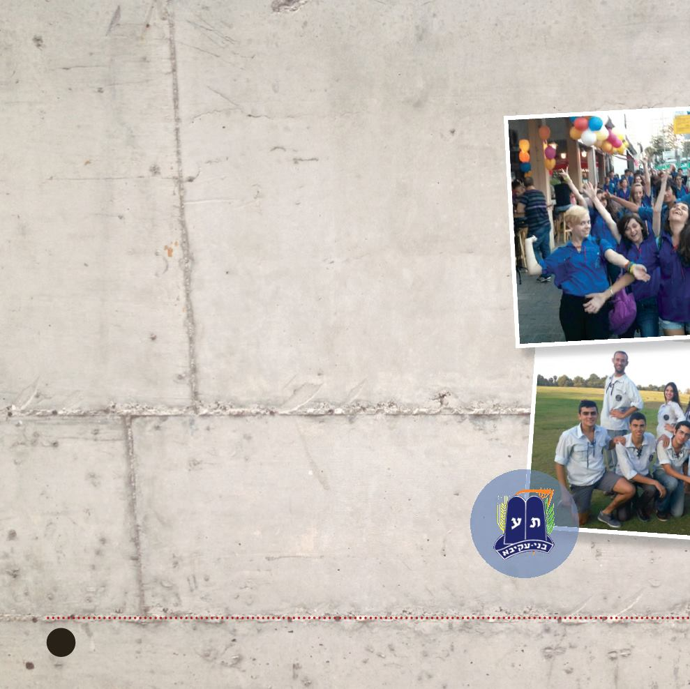

17
מחלקת הנוער / טל: 5311003-450
תנועת
בניעקיבא
רות גוטמן
קומונרית הסניף:
טל: 7572663-250
רח׳ שלמה המלך 03, קריית אונו
מדריך מקבל הכשרה בהתאם לגילאי
השבט שלו.
גרעיני נחשון חיים של תורה ועבודה. אחת
לשבוע נפגשים הגרעינים ללימוד ואחת
לשבוע נפגשים לעשייה קבועה. בנוסף
במהלך השנה מארגנים הגרעינים עשייה
התנדבותית על פי מעגל השנה, בסניף, בעיר
ובעם.
ימי הפעילות:
ב
בסניף מתקיימות פעילויות במהלן השבוע
ובשבת:
)שכבת ד׳-ט׳( ימי שלישי
חבריא א
20:00–17:00
ובשבת )בהתאם לזמני שבת(
)שכבת ט׳-י״ב(,
חבריא ב
ישיבות גרעין - ימי שני,
פעילות חב"ב – ימי חמישי ושבת, פעילויות
והתנדבויות קבועות במשך השבוע, תל
השומר, גמ"ח, עזרה לילדים, קשישים
ועוד... ובערבי שבת מועברות שיחות
מגוונות.
בסניף קיים וועד הורים, עוזר להעצמת
הסניף, לקבלת החלטות ולביצועם.
פעילות סניפית, מחוזית וארצית במהלך
השנה: מסע סוכות, שמחת תורה, חודש
ארגון, נטיעות, מסיבת חנוכה, שוק פורים,
לימוד תורה חוויתי, מסע פסח, צעדת יום
ירושלים, התנדבויות ועשייה למען הקהילה,
מחנות קיץ לפי שבטים, יציאה לפארקים,
אתגרים ועוד...
בברכת חברים לתורה ועבודה!
תנועת בני עקיבא מניפה את דגל התורה
והעבודה. זוהי תנועת נוער חזקה היודעת
את דרכה, הקוראת לכלל עם ישראל להיות
שותפים בה ומגדירה עצמה כתנועה של עם.
בני עקיבא מונה כיום כ-62 סניפים ברחבי
העולם ו-543 סניפים הפזורים ברחבי ארץ
ישראל.
חברי התנועה מאמינים בחיי עמל ועשייה
כחלק בלתי נפרד מחיי התורה שלהם. חזון
התנועה הוא חינוך דור נאמן ומסור לתורתו,
לעמו ולארצו, החי על עבודתו ברוח התורה.
אנו בתנועה מחנכים לחיי אמונה ומעשה,
יוצרים חברה אידיאליסטית של נוער לומד,
פועל ועושה, מגבירים את המודעות לזהות
יהודית ומרימים את רוח העם.
תנועת בנ"ע מפעילה פרויקטים לקליטת
עלייה, שבטים לבעלי צרכים מיוחדים, עזרה
קבועה למשפחות במצוקה, גרעינים לפיתוח
מנהיגות בשכונות, גרעיני משפחות ובנות
שרות.
צוות ההדרכה מקבל הכוונה מקצועית וליווי
צמוד, ימי עיון, וסמינריונים להכשרתם. כל